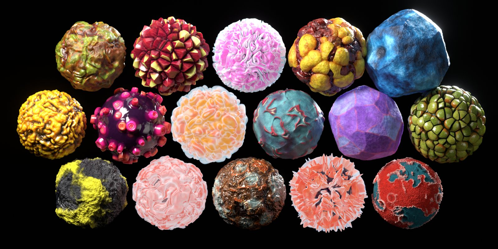
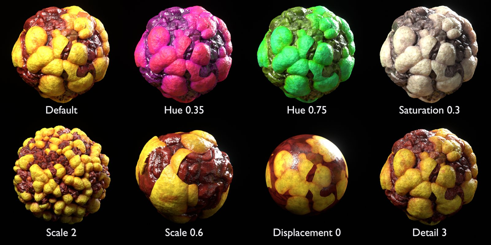
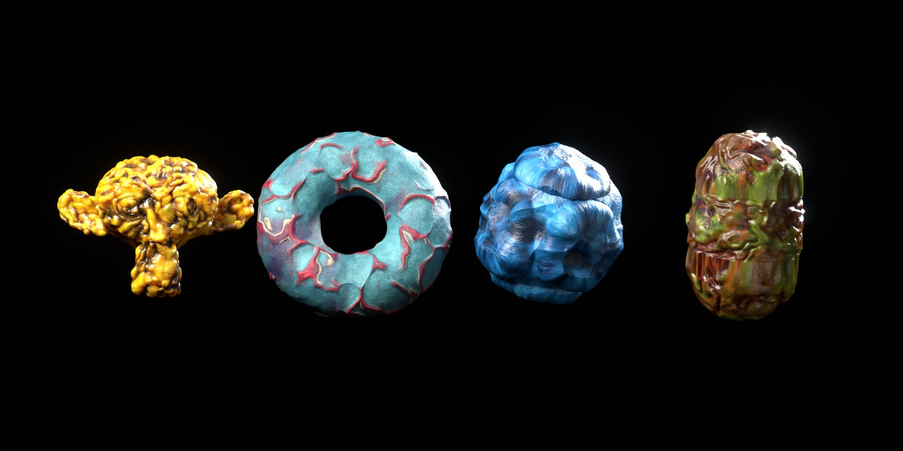
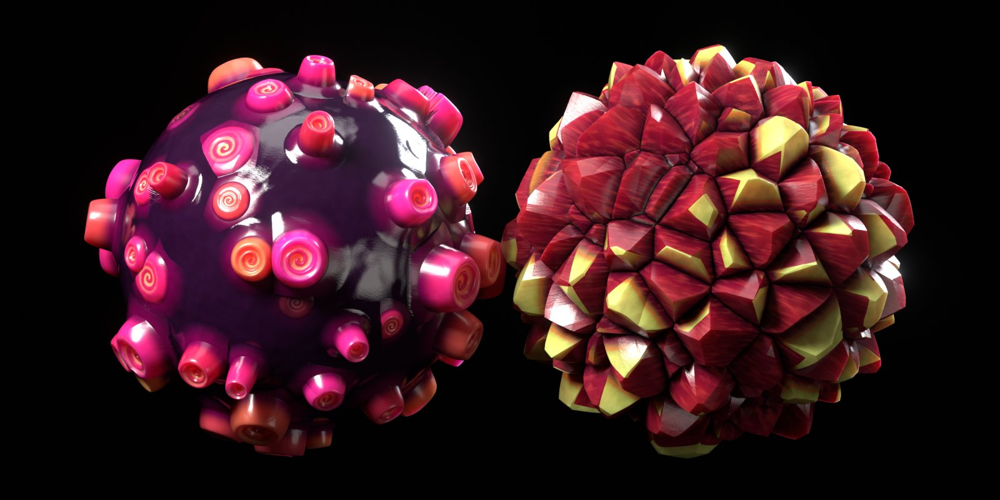
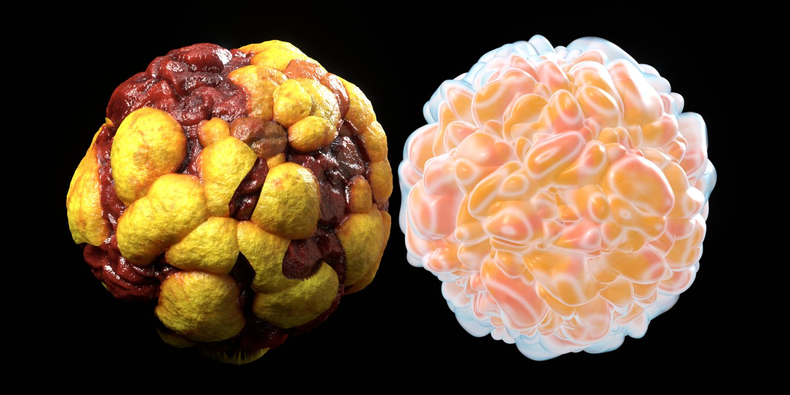

Wet flesh, brain coral, scales, crystals, glowing jellies, alien hides, moss and stone, built entirely from shader nodes with real displacement.

Every material, rendered in Cycles under the same light. Use the arrows, swipe, or filter by category.
Each material is a single node group: real displacement, subsurface scattering, a wet coat layer and micro detail such as pores, grain and wrinkles.
Pure 3D procedural patterns: no UVs needed, no tiling, no resolution limit.
True geometry, not just bump. Adaptive subdivision in Cycles, regular subdivision in EEVEE.
Catalogs, rendered previews, descriptions and tags for every material. Drag, drop, render.
Recolour, rescale and dial the relief without opening the node network. The Glow materials add a Glow strength control.

| Input | Effect |
|---|---|
| Scale | Pattern size (about 1 / radius for non-unit objects) |
| Displacement | Relief height multiplier; 0 gives a flat surface with bump detail only |
| Detail | Micro-bump strength: pores, grain, wrinkles |
| Hue / Saturation / Brightness | Colour grading; Hue 0.5 keeps the original colours |
| Glow | Self-illumination (Glow materials only) |
The materials were designed on spheres, and they work on characters, rocks, props and abstract shapes too.



Unzip, then go to Edit › Preferences › File Paths › Asset Libraries, click + and select the Organic Spheres Library folder.
Open an Asset Browser, pick the library, and drag a material onto your object. Or drag in OS Ready Sphere from Utilities to get a sphere that is already set up.
Add a Subdivision Surface modifier. For EEVEE, use render levels 4–6. For Cycles, enable Adaptive Subdivision (in Blender 4.x, set Feature Set to Experimental first).
Go to Object Data › Shape Keys and tick Add Rest Position. This keeps the colours fixed to the displaced relief.
Blender 4.5 LTS and newer. The materials are tested in 4.5 and 5.2 with both Cycles and EEVEE.
No. The download is plain .blend files plus a catalog file.
Add a Subdivision Surface modifier, then raise its render levels in EEVEE or enable Adaptive Subdivision in Cycles.
Change the material's Scale input, or apply your object's scale with Ctrl A › Scale.
Yes, in your renders, animations, games and other projects. Reselling or redistributing the materials themselves isn't allowed.